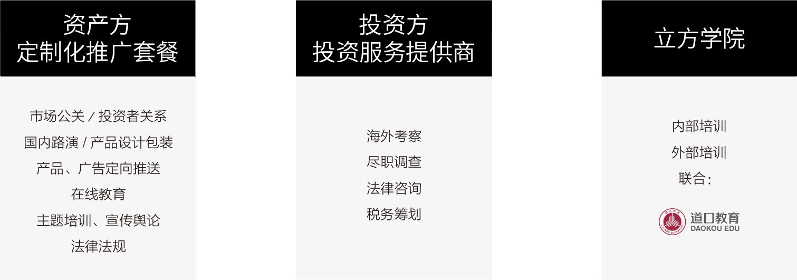

跨境展业服务
智能匹配资金资产双方需求的跨境投资综合服务体系


投资展业服务列表
- 1 文案包装
- 2 调研报告
- 3 视觉推广方案
- 4 线下路演
- 5 活动推广
- 6 中文产品包装
- 7 多媒体推广
- 8 权威发布
- 9 多维宣传方案
- 10 核心访谈约见
- 11 增值服务
投资展业——寻求融资
海外未上市高科技创新企业／投资管理机构／金融咨询机构寻求中国机构投资
用符合中国机构投资逻辑的方式全方位展现融资目标的潜力与前景
效果：筛选、对接有效投资人，提高融资效率
投资展业——市场推广
海外企业／机构进入中国市场的初期产品／企业形象推广
灵活利用新式传播渠道推广
让企业的核心卖点高效传达机构投资人及潜在客户／合作伙伴

投资展业——了解中国市场
在做出进入中国的决策前，必不可少的行业、政策、市场需求摸底
资立方专业投研团队长期紧贴中国市场一线动向
效果：对市场的了解能让决策更有效，落地更精确

投资展业——新媒体推广
利用新媒体的力量，让传统的金融行业焕发新的活力
传统媒体与自媒体结合，线上线下互动，利用资立方特有的线上社区效应，展现立体的推广效果
效果：新媒介的引入可以让进入瓶颈期的业务挖掘新的机会
投资展业——KYC
帮助海外投资机构完成对境内客户的了解和审查(Know Your Customer)
结合对中国市场的了解核实、审核潜在投资人情况
效果：完善的 KYC 可以减少投资风险

投资展业——海外市场摸底／尽调
中国企业／机构在进行跨境资产配置时，需要对海外潜在市场进行深入一线考察
资立方海外一线团队对潜在投资对象进行市场摸底，现场调查
通过资立方增值服务体系“立方行”让客户用最小的成本进行实地考察和市场了解

增值服务——跨境投资培训项目
帮助有海外投资规划或兴趣的机构／个人进行有针对性的跨境投资培训
培训课程／内容定制化
封闭式、高强度培训／线上移动培训
专业讲师团队／权威合作培训机构
增值服务——“立方行”活动列表